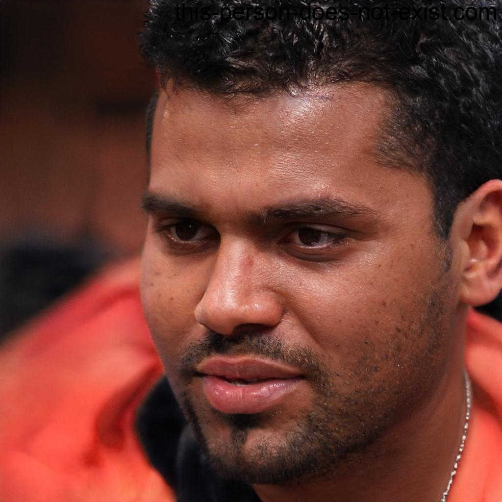

----Video----
Notre équipe
Maëlys, étudiante en tourisme et communication
Age: 21 ans
Formation: Étudiante en tourisme et communication à l'Université de Brest Background: Originaire de Concarneau, Maëlys est passionnée par la promotion de la culture bretonne. Elle a choisi d'étudier le tourisme et la communication pour partager sa fascination pour la région avec le monde. Maëlys a déjà travaillé dans l'organisation d'événements culturels et touristiques. Objectifs: Créer une crêperie qui met en valeur la culture bretonne pour les touristes tout en restant authentique pour les locaux. Maëlys souhaite utiliser ses compétences en communication pour promouvoir la crêperie sur les réseaux sociaux et attirer une clientèle diversifiée.
Nicolas, étudiant en économie agricole
Age: 24 ans
Formation: Étudiant en économie agricole à l'École Nationale Supérieure Agronomique de Rennes Background: Originaire de Lorient, Nicolas a une passion pour le développement économique des zones rurales et l'agriculture. Il a choisi d'étudier l'économie agricole pour comprendre comment les entreprises agricoles peuvent prospérer tout en préservant l'environnement. Objectifs: Ouvrir une crêperie qui fonctionne en étroite collaboration avec les agriculteurs locaux pour soutenir l'économie régionale. Nicolas souhaite créer un modèle commercial durable et éthique, tout en proposant des crêpes qui mettent en valeur la richesse des produits agricoles bretons. Il envisage également d'organiser des initiatives pour sensibiliser à l'importance du soutien aux agriculteurs locaux.

Hugo, étudiant en agroalimentaire
Age: 25 ans
Formation: Étudiant en agroalimentaire à l'Institut Supérieur des Sciences Agronomiques de Rennes Background: Originaire de Vannes, Hugo a toujours été intéressé par la provenance des ingrédients et les techniques de production alimentaire. Il a choisi une filière en agroalimentaire pour mieux comprendre les aspects techniques de la cuisine bretonne. Hugo a travaillé dans une cidrerie artisanale pour approfondir ses connaissances sur les produits locaux. Objectifs: Créer une crêperie axée sur les ingrédients locaux et la durabilité. Hugo souhaite éduquer ses clients sur l'importance de soutenir l'agriculture locale tout en proposant des crêpes délicieuses. Il envisage également d'organiser des événements pour sensibiliser à l'agroalimentaire durable.
Émilie, étudiante en arts culinaires et design
Age: 23 ans
Formation: Étudiante en arts culinaires et design à l'École Supérieure d'Arts Culinaires de Nantes Background: Originaire de Saint-Malo, Émilie a une passion pour l'alliance de la gastronomie et du design. Elle a suivi une formation qui combine les aspects créatifs de la cuisine avec la conception visuelle des plats. Émilie a déjà remporté des concours culinaires locaux et souhaite maintenant créer une crêperie qui offre une expérience visuelle unique. Objectifs: Concevoir une crêperie au design innovant où les crêpes sont présentées de manière artistique. Émilie veut créer une atmosphère esthétique tout en respectant les traditions bretonnes. Elle vise à attirer un public jeune et créatif.
Antoine, étudiant en gestion culinaire
Age: 22 ans
Formation: Étudiant en gestion culinaire à l'Université de Rennes Background: Originaire de Quimper, Antoine est passionné par la cuisine depuis son adolescence. Il a choisi de poursuivre des études en gestion culinaire pour acquérir les compétences nécessaires à la création de sa propre crêperie. Il a déjà travaillé dans plusieurs restaurants bretons pour se familiariser avec les aspects opérationnels de l'industrie alimentaire. Objectifs: Ouvrir une crêperie moderne qui allie tradition et innovation. Antoine souhaite proposer des crêpes uniques en utilisant des ingrédients locaux et durables. Il vise à créer un lieu convivial et abordable pour les étudiants et les habitants de la région.

Nos valeurs
Qualité Bretonne
Nous nous engageons à préparer nos crêpes avec des ingrédients locaux et authentiques de la plus haute qualité, en perpétuant les recettes traditionnelles bretonnes. Chaque crêpe est soigneusement confectionnée pour vous offrir une expérience gustative authentique, directement inspirée de la tradition bretonne.
Tradition Artisanale
Nous célébrons la tradition artisanale de la confection de crêpes, en préservant les méthodes artisanales ancestrales de cuisson sur bilig (plaque à crêpes bretonne). Chaque crêpe est préparée avec minutie et amour pour honorer cet héritage culinaire unique de Bretagne.
Respect de l'environnement
Nous sommes déterminés à minimiser notre impact sur l'environnement. Nous privilégions les fournisseurs locaux pour soutenir l'économie régionale et adoptons des pratiques respectueuses de l'environnement, notamment en réduisant les déchets et en utilisant des emballages durables.
Service Chaleureux
Notre équipe est dévouée à offrir un service chaleureux et personnalisé, typique de l'hospitalité bretonne. Nous accueillons chaque client avec le sourire et mettons tout en œuvre pour rendre votre expérience chez nous des plus agréables.
Engagement Communautaire
Nous sommes fiers de notre lien avec la communauté bretonne. En plus de servir de délicieuses crêpes, nous nous impliquons activement dans des événements locaux et soutenons les initiatives culturelles et sociales de notre région pour contribuer à son dynamisme et à son épanouissement.